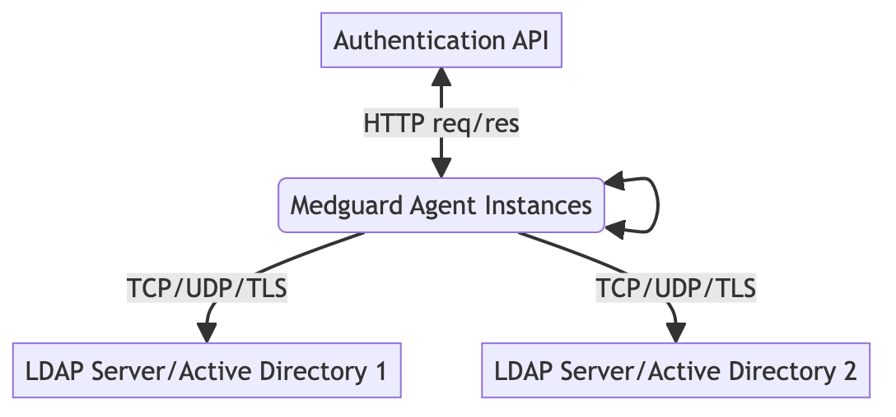

Medguard Systems provides credentialing and authentication products for diagnostic providers. This documentation outlines general technical details for the Authentication API and the on-premise software toolkit Medguard Agent.
Our cloud identity provider (IdP) service exposes a set of endpoints that Medguard Agent interacts with during an authentication event.
These endpoints can be found here.
Please note that endpoints should not ordinarily be accessed directly by providers.
Our on-premise software is designed to be simple to configure and customised for individual use cases. The documentation presented here represents a general use case. Contact us to discuss how we can customise Medguard Agent to fit your existing infrastructure requirements.

Medguard Agent is performing 3 distinct functions:
At a high level Medguard Agent is a function that maps a traditional HTTP OAuth flow onto authentication in an LDAP setting.
Medguard Agent is easily configured using a TOML file. On launch of the executable, the configuration flag is passed.
foo@bar:~$ medguard-agent -c /path/to/config.toml
or
C:\> medguard-agent -c /path/to/config.toml
A minimum example configuration is shown below.
[instance]
name = "server_name_1"
[api-key]
key = my-orgs-secret-api-key
[agent-instances]
[agent-instances.server_name_1]
location = "10.0.0.4:3030"
target = "10.0.0.4:389"
[agent-instances.server_name_2]
location = "10.0.1.84:3030"
target = "10.0.1.84:389"
Contact us to discuss specific configuration requirements your organisation may have.